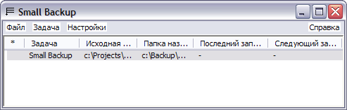

Small Backup |
|
|
Small Backup - небольша€ программа дл€ резервного копировани€ данных. ќна позвол€ет создавать неограниченное количество задач. ” каждой задачи есть различные параметры, такие, как исходна€ папка (откуда копировать данные), папка назначени€ (куда копировать), можно указать те файлы которые нужно копировать и те которые не нужно (с помощью масок). ≈сть поддержка внешних архиваторов и возможность выполнени€ задач по расписанию. ѕрограмма поддерживает Unicode. ќсновные возможности:
 ≈сли у вас есть какие-то предложени€ или замечани€, можете оставить сообщение в гостевой книге или написать мне письмо по адресу smallbackup@smallb.info (с пометкой "Small Backup"). “ак же если вы пользуетесь программой, зарегестрируйтесь, пожалуйста. –егистраци€ бесплатна. |
|